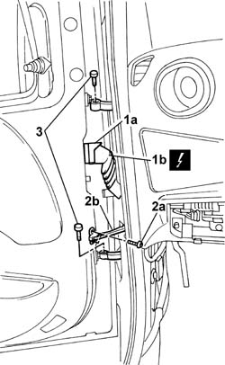

7210E36 R.R. FRONT SIDE DOOR
- Path
- Procedures > 72 PANELS AND FRAMES > 7210 REMOVING-REFITTING > 7210E external parts > 7210E36 R.R. FRONT SIDE DOOR
- Kind
- repair procedure (removal / refitting; the operation number is the code)
- Applies to
- all engines; all production periods
- Interactive page
- https://sloeber94.github.io/elrnDB-fDbl/en/#/2585264
Applies to: all engines; all production periods
 Removing
Removing
 Refitting
RefittingDisconnect the battery negative terminal.
1. Open lever (1a) and disconnect the electrical connection of door (1b).
 | Name | Connector |
|---|---|---|
1b | Front left door connection |
| Name | Connector |
|---|---|---|
1b | Front right door connection |
2. Undo bolts (2a) securing door opening limiter (2b).
3. Undo the bolts securing the door hinges.
Remove the door and place on a suitable stand.

Applies to: all engines; all production periods
Refitting
RemovingCheck the door is undamaged.
Touch up the paintwork if necessary.
Fit the door and tighten the door hinge retaining bolts to torque.
 | Fastening | Component | Ø | Value (daNm) |
|---|---|---|---|---|
- | Bolt | FRONT SIDE DOOR HINGES | M8 | 2.4 |
Tighten the bolts securing the door opening limiter, door side, to torque.
| Fastening | Component | Ø | Value (daNm) |
|---|---|---|---|---|
- | Bolt | FRONT DOOR OPENING LIMITER | M6 | (door) 1.2 |
Connect the electrical connector.
| Name | Connector |
|---|---|---|
- | Front left door connection |
| Name | Connector |
|---|---|---|
- | Front right door connection |
Connect the battery negative terminal.